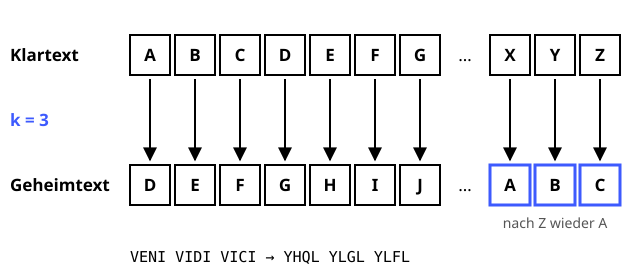

Caesar-Verschlüsselung
Der Klassiker aus dem alten Rom – heute nur noch als Vorspeise.
Definition
Bei der Caesar-Verschlüsselung wird jeder Buchstabe des Klartexts um eine feste Anzahl Stellen im Alphabet verschoben. Der geheime Schlüssel ist genau diese Verschiebung (1 bis 25). Julius Caesar soll so mit seinen Generälen kommuniziert haben – mit der Verschiebung 3.
Zutaten
- Klartext (Buchstaben A–Z)
- Geheimer Schlüssel k zwischen 1 und 25
- Das Alphabet mit 26 Buchstaben
Zubereitung
- Absender und Empfänger vereinbaren vorab heimlich den Schlüssel k.
- Jeden Buchstaben des Klartexts um k Stellen nach rechts verschieben. Nach Z geht es wieder bei A weiter (Rechnen modulo 26).
- Leerzeichen und Satzzeichen bleiben, wie sie sind.
- Den Geheimtext verschicken.
- Der Empfänger verschiebt jeden Buchstaben um k Stellen zurück und erhält den Klartext.
Skizze

Jeder Buchstabe rückt um k = 3 Stellen weiter. Am Ende des Alphabets geht es vorne wieder los (blau).
Skizze erstellt von Claude (KI)
Demo
Platzhalter für die Demo
Tipps
- Nicht für echte Geheimnisse verwenden! Es gibt nur 25 mögliche Schlüssel – ein Angreifer probiert sie in Sekunden alle durch (Brute Force).
- Auch ohne Durchprobieren verrät die Häufigkeitsanalyse den Schlüssel: Im Deutschen ist E der mit Abstand häufigste Buchstabe.
- ROT13 ist Caesar mit k = 13. Zweimal angewendet ergibt sich wieder der Klartext.
- Gut als Einstieg, um die Begriffe Klartext, Geheimtext und Schlüssel zu verstehen.